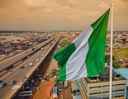

Oko Christiana Uzoamaka | WDD 130
My name is Oko Christiana Uzoamaka, a dedicated Computer Engineer
and Software Developer from Nigeria, as well as a student at
BYU-Idaho. I specialize in innovative software development,
creative web solutions, and impactful design to help clients
achieve their goals and enhance their digital footprint.
Nigeria

Nigeria, located in West Africa, has a rich history dating back
to ancient civilizations like the Nok culture and powerful
kingdoms such as Oyo, Ife, and Kanem-Bornu. Colonized by Britain
in the 19th century, it was amalgamated in 1914 and gained
independence on October 1, 1960. Post-independence, Nigeria
faced ethnic tensions, a civil war (1967–1970), and years of
military rule before transitioning to democracy in 1999. Today,
it is Africa's most populous country, known for its cultural
diversity, oil wealth, and global influence in music, film, and
literature.
Safty Measures and Equipment Provided
We take the safety of our employees and visitors very seriously. Here are some of the safety measures we have in place:
Safety Measures
ul>
li>Regular fire drills and evacuation procedures/li>
li>First aid kits and trained first responders/li>
li>Secure entry and exit points/li>
li>Proper lighting and ventilation in all areas/li>
li>Regular maintenance of equipment and machinery/li>
-ul>
Safety Equipment
ul>
li>Hard hats/li>
li>Safety glasses/li>
li>Earplugs/li>
li>Steel-toed boots/li>
li>Respirators/li>
li>Fall protection gear/li>
-ul>